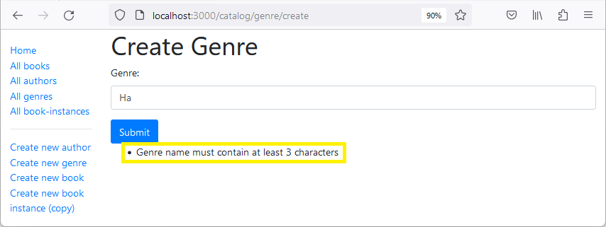

This sub article shows how we define our page to create Genre objects (this is a good place to start because the Genre has only one field, its name, and no dependencies). Like any other pages, we need to set up routes, controllers, and views.
To use the express-validator in our controllers we have to require the functions we want to use from the 'express-validator' module.
Open /controllers/genreController.js, and add the following line at the top of the file:
const { body,validationResult } = require("express-validator");
Note: This syntax allows us to use body and validationResult as the associated middleware functions, as you will see in the post route section below. It is equivalent to:
validator = require("express-validator");
body = validator.body();
validationResult = validator.validationResult();
Find the exported genre_create_get() controller method and replace it with the following code. This renders the genre_form.pug view, passing a title variable.
// Display Genre create form on GET.
exports.genre_create_get = function(req, res, next) {
res.render('genre_form', { title: 'Create Genre' });
};
Find the exported genre_create_post() controller method and replace it with the following code.
// Handle Genre create on POST.
exports.genre_create_post = [
// Validate and santize the name field.
body('name', 'Genre name required').trim().isLength({ min: 1 }).escape(),
// Process request after validation and sanitization.
(req, res, next) => {
// Extract the validation errors from a request.
const errors = validationResult(req);
// Create a genre object with escaped and trimmed data.
var genre = new Genre(
{ name: req.body.name }
);
if (!errors.isEmpty()) {
// There are errors. Render the form again with sanitized values/error messages.
res.render('genre_form', { title: 'Create Genre', genre: genre, errors: errors.array()});
return;
}
else {
// Data from form is valid.
// Check if Genre with same name already exists.
Genre.findOne({ 'name': req.body.name })
.exec( function(err, found_genre) {
if (err) { return next(err); }
if (found_genre) {
// Genre exists, redirect to its detail page.
res.redirect(found_genre.url);
}
else {
genre.save(function (err) {
if (err) { return next(err); }
// Genre saved. Redirect to genre detail page.
res.redirect(genre.url);
});
}
});
}
}
];
The first thing to note is that instead of being a single middleware function (with arguments (req, res, next)) the controller specifies an array of middleware functions. The array is passed to the router function and each method is called in order.
Note: This approach is needed, because the validators are middleware functions.
The first method in the array defines a body validator (body()) that validates and sanitizes the field. This uses trim() to remove any trailing/leading whitespace, checks that the name field is not empty, and then uses escape() to remove any dangerous HTML characters).
// Validate that the name field is not empty.
body('name', 'Genre name required').trim().isLength({ min: 1 }).escape(),
After specifying the validators we create a middleware function to extract any validation errors. We use isEmpty() to check whether there are any errors in the validation result. If there are then we render the form again, passing in our sanitized genre object and the array of error messages (errors.array()).
// Process request after validation and sanitization.
(req, res, next) => {
// Extract the validation errors from a request.
const errors = validationResult(req);
// Create a genre object with escaped and trimmed data.
var genre = new Genre(
{ name: req.body.name }
);
if (!errors.isEmpty()) {
// There are errors. Render the form again with sanitized values/error messages.
res.render('genre_form', { title: 'Create Genre', genre: genre, errors: errors.array()});
return;
}
else {
// Data from form is valid.
... <save the result/> ...
}
};
If the genre name data is valid then we check if a Genre with the same name already exists (as we don't want to create duplicates). If it does, we redirect to the existing genre's detail page. If not, we save the new Genre and redirect to its detail page.
// Check if Genre with same name already exists.
Genre.findOne({ 'name': req.body.name })
.exec( function(err, found_genre) {
if (err) { return next(err); }
if (found_genre) {
// Genre exists, redirect to its detail page.
res.redirect(found_genre.url);
}
else {
genre.save(function (err) {
if (err) { return next(err); }
// Genre saved. Redirect to genre detail page.
res.redirect(genre.url);
});
}
});
This same pattern is used in all our post controllers: we run validators (with sanitisers), then check for errors and either re-render the form with error information or save the data.
The same view is rendered in both the GET and POST controllers/routes when we create a new Genre (and later on it is also used when we update a Genre). In the GET case the form is empty, and we just pass a title variable. In the POST case the user has previously entered invalid data—in the genre variable we pass back a sanitized version of the entered data and in the errors variable we pass back an array of error messages.
res.render('genre_form', { title: 'Create Genre'});
res.render('genre_form', { title: 'Create Genre', genre: genre, errors: errors.array()});
Create /views/genre_form.pug and copy in the text below.
extends layout
block content
h1 #{title}
form(method='POST' action='')
div.form-group
label(for='name') Genre:
input#name.form-control(type='text', placeholder='Fantasy, Poetry etc.' name='name' value=(undefined===genre ? '' : genre.name))
button.btn.btn-primary(type='submit') Submit
if errors
ul
for error in errors
li!= error.msg
Much of this template will be familiar from our previous tutorials. First, we extend the layout.pug base template and override the block named 'content'. We then have a heading with the title we passed in from the controller (via the render() method).
Next, we have the pug code for our HTML form that uses the POST method to send the data to the server, and because the action is an empty string, will send the data to the same URL as the page.
The form defines a single required field of type "text" called "name". The default value of the field depends on whether the genre variable is defined. If called from the GET route it will be empty as this is a new form. If called from a POST route it will contain the (invalid) value originally entered by the user.
The last part of the page is the error code. This prints a list of errors, if the error variable has been defined (in other words, this section will not appear when the template is rendered on the GET route).
Note: This is just one way to render the errors. You can also get the names of the affected fields from the error variable, and use these to control where the error messages are rendered, whether to apply custom CSS, etc.
Run the application, open your browser to http://localhost:3000/, then select the Create new genre link. If everything is set up correctly, your site should look something like the following screenshot. After you enter a value, it should be saved and you'll be taken to the genre detail page.
The only error we validate against server-side is that the genre field must not be empty. The screenshot below shows what the error list would look like if you didn't supply a genre (highlighted in red).

Note: Our validation uses trim() to ensure that whitespace is not accepted as a genre name. We can also validate that the field is not empty on the client side by adding the value required='true' to the field definition in the form:
input#name.form-control(type='text', placeholder='Fantasy, Poetry etc.' name='name' value=(undefined===genre ? '' : genre.name), required='true' )